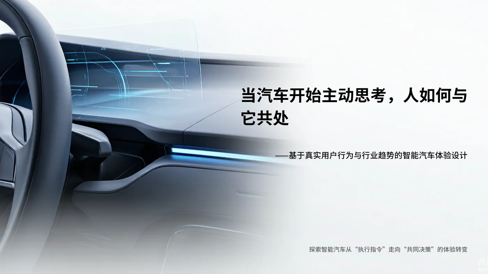
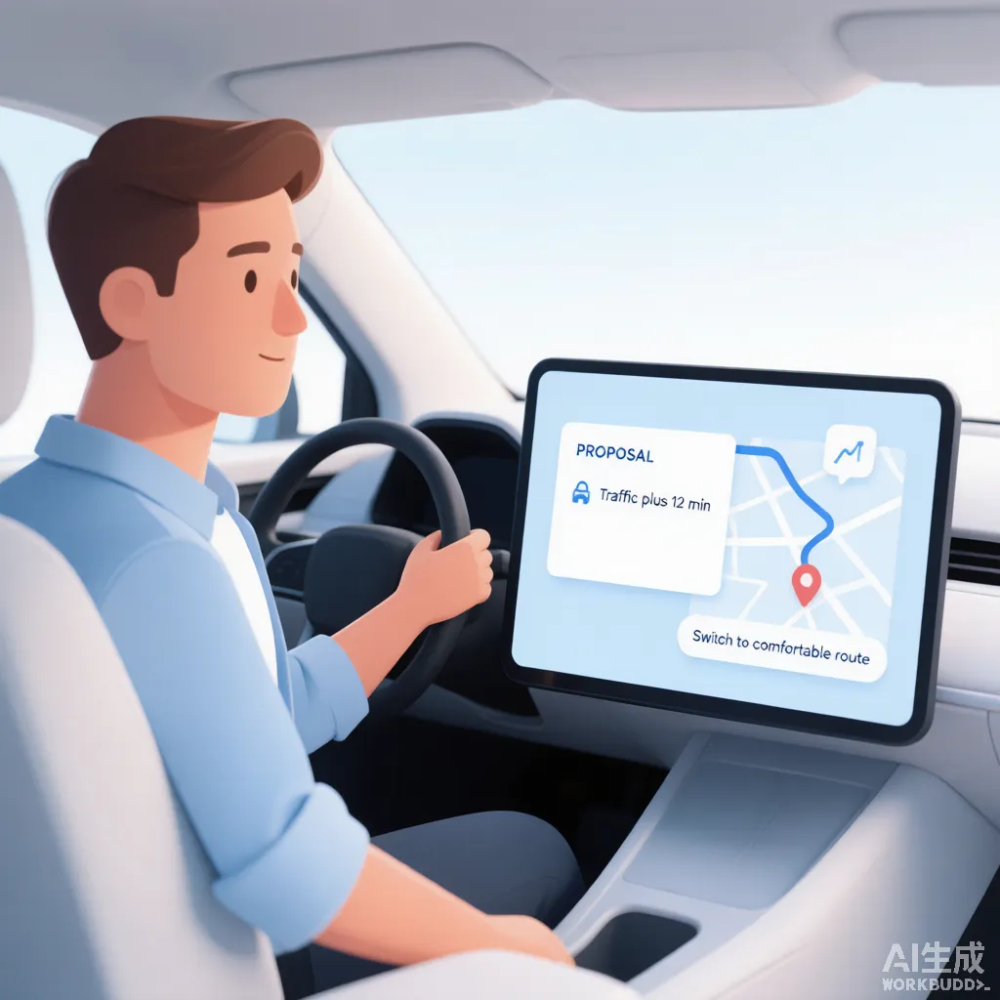
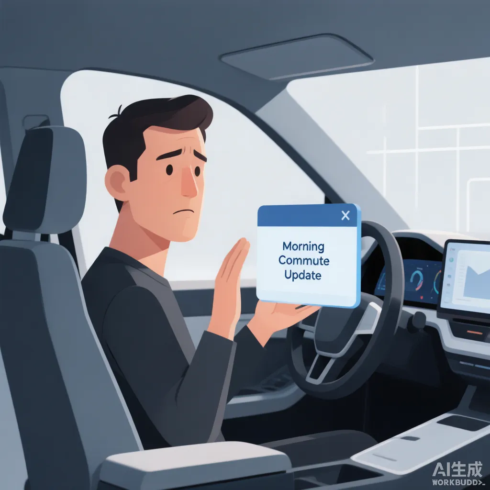
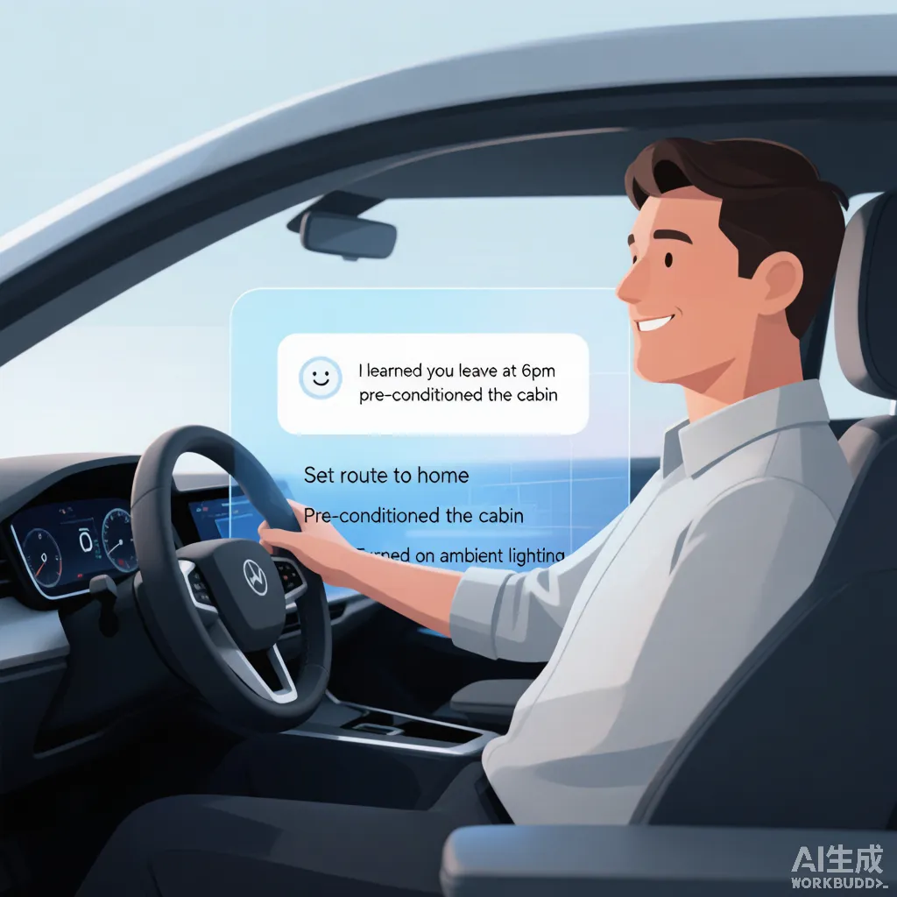

行业研究 · 体验框架Industry Research · Experience Framework
当汽车开始主动思考，人如何与它共同决策？When the Car Starts to Think, How Do We Decide Together?
姊妹项目：机器人研究"人如何与进入家庭的智能体建立关系"，汽车研究"人如何与越来越主动的汽车共同决策"。核心交付是一套体验框架，已建立；研究证据正在收集中——「待补充」板块由我后续填入真实素材后替换。Sister to the robotics project: robots study the relation, cars study co-decision with an proactive agent. The framework is set; evidence marked "to add" will be replaced later.

今天的智能汽车竞争，不是谁拥有更多功能，而是谁能让这些智能能力真正融入用户的长期生活。Today's smart-car race is not about who has more features, but who can truly weave those intelligent capabilities into the user's long-term life.
母题 · 人与智能机器THESIS · Human × Intelligent Machines
商业语境 · 为什么是现在Business Context · Why Now
汽车正从"执行指令的工具"变为具备感知、判断与主动行动能力的智能体。智能座舱、AI 语音助手、主动推荐、AI Agent、OTA 持续升级已成为车企校招的标配赛道——这意味着"做一个语音助手"这类功能层机会已经饱和。真正的体验断层在协作层：当汽车主动思考、主动提议时，人如何保持理解、信任与控制，如何不被决策疲劳拖垮。这恰好对应车企 JD 中反复点名的「共决策 / 可控主动 / 认知负荷 / 意图即界面」。The car is becoming an agent that perceives, judges and acts. Smart cockpit, voice assistant, proactive recommendation, AI Agent and OTA are now standard hiring tracks — so "build a voice assistant" is saturated. The real rift is in collaboration: when the car thinks and proposes on its own, how do people stay understood, trusted and in control without decision fatigue. This maps to the "co-decision / controllable initiative / cognitive load / intent-as-interface" JD keywords.
- 汽车正在从"执行指令的工具"，变成"主动参与决策的智能伙伴"。The car is shifting from a tool that executes commands to an intelligent partner that decides with you.
- 当汽车越来越聪明，设计的重点就不再是让它"能做什么"，而是让用户知道"什么时候该让它做、为什么让它做，以及什么时候应该由人接管"。As cars get smarter, design is no longer about what it can do, but helping users know when to let it act, why, and when to take back control.
- 真正的智能，不是汽车替用户做更多决定，而是让人与汽车之间的决策更加自然。Real intelligence isn't the car making more decisions for you — it's making the human–car decisions feel natural.
- 功能可以通过 OTA 不断增加，但用户对一辆汽车的信任，需要在每一次交互中建立。Features can keep growing via OTA, but trust in a car is built in every single interaction.
本作品集与姊妹项目《家庭机器人体验框架》同属母题「Human × Intelligent Machines」——智能设备正从工具走向伙伴，UX 的命题也从"人如何操作机器"转向"人与机器如何共同生活、共同决策"。This project and its sister (the Home-Robot Experience Framework) share the umbrella thesis "Human × Intelligent Machines" — as devices move from tools to partners, UX shifts from "how to operate a machine" to "how human and machine live and decide together".
定位：一项自主发起的行业研究，产出"可被不同座舱系统采用的共决策体验思考方式"，并用一个具体出行场景验证它。Positioning: a self-initiated study producing a reusable co-decision thinking, validated by one mobility scenario.
研究问题 · 未被填平的体验断层The Opportunity · The Unfilled Rift
红线：先核验行业已做到什么，再决定解决什么。下列断层来自"功能虽已存在，但人与它的关系仍有缝隙"的判断。Red line: verify what's shipped before deciding what to solve. The rifts come from "the feature exists, but the human–system relation still has gaps".
汽车自作主张时，人能否一眼看懂、随时修改或撤销——"可控主动"比"更主动"更难也更有价值。When the car decides for you, can it be read, edited or undone at will — controllable initiative beats "more initiative".
主动提议时，汽车能否说清"为什么"并把意图直接变成界面，而非弹窗轰炸——行业已点名，产品未落地。When proposing, can the car explain "why" and turn intent straight into UI, not popup spam — named by industry, unbuilt in product.
频繁确认 / 多选项让人疲惫；认知负荷需随场景动态管理（驾驶中降载、停车时增载）。Constant confirmation / options tire users; cognitive load must be managed dynamically by context (less while driving, more when parked).
人是否愿意把部分决定权交给座舱 Agent，取决于它是否"可预测、可解释、可收回"。Whether people delegate to the cockpit Agent depends on it being predictable, explainable and retractable.
研究方法 · 六层事实核验Research Method · Six-layer Verification
每个设计判断都经六层信息核验，避免用旧资料或主观想象下结论。这是本项目区别于"拍脑袋概念"的底色。Every design call is verified across six information layers, avoiding stale data or imagination. This is what separates the study from a gut-feel concept.
官网 / 手册 / 发布会 / App / OTA 记录——确认企业理论上有什么能力。Site, manual, launch, app, OTA logs — what a company theoretically can do.
带任务观察：用户怎么表达、车如何理解、是否追问、是否主动、能否修改 / 解释 / 撤销 / 记忆。Task-based: express → understand → ask → act → editable? → explained? → undoable? → remembered?
懂车帝 / 汽车之家 / B站 / 小红书 / 抖音 / 海外——用户真正怎么用，而非媒体怎么宣传。Dongchedi, Autohome, Bilibili, Xiaohongshu, Douyin, overseas — real use, not PR.
把车主操作当情景观察：何时用 AI、何时弃用语音、哪些功能找不到、哪些主动行为让人觉"自作主张"。Owners' operation as field material: when AI is used, when voice dropped, what's missing, what feels like the car decides for you.
区分：已量产 / 在推送 / OTA 规划 / 概念 / 未实现，避免旧资料误判。Tag as shipped / rolling out / OTA-planned / concept / none — avoid stale calls.
座舱、AI Agent、自动化信任、解释性、决策疲劳、用户控制权等研究支撑判断。Smart cockpit, AI Agent, automation trust, explainability, decision fatigue, user control.
功能事实表 · 2026 体验现状地图Feature Fact Table · 2026 Map
六层核验的产出物：选 5 个代表性座舱系统对比核心能力，每项标注：已实现 / 部分 / OTA / 概念 / 未实现。下表为占位示例，需逐项以官方资料 + OTA 状态核验后替换。Output of the six-layer check: five cockpits compared on core capabilities, each tagged done/partial/OTA/concept/none. Placeholder — verify each cell against official docs + OTA status.
| 能力Capability | 鸿蒙智行HIMA | 小米 SU7Xiaomi | 理想Li Auto | 小鹏XPeng | 特斯拉Tesla |
|---|---|---|---|---|---|
| 主动理解意图Proactive intent | 部分Partial | 部分Partial | 已实现Done | 部分Partial | 部分Partial |
| 主动推荐Proactive recommend | 已实现Done | 部分Partial | 已实现Done | 部分Partial | 部分Partial |
| 跨系统执行任务Cross-system task | 部分Partial | 部分Partial | 部分Partial | OTAOTA | 未实现None |
| AI Agent | OTAOTA | 部分Partial | OTAOTA | OTAOTA | 未实现None |
| 主动解释Proactive explain | 部分Partial | 部分Partial | 部分Partial | 部分Partial | 未实现None |
| 用户修改 / 拒绝Modify / reject | 已实现Done | 已实现Done | 已实现Done | 已实现Done | 部分Partial |
| 用户控制权User control | 已实现Done | 已实现Done | 已实现Done | 已实现Done | 已实现Done |
| 个性化Personalization | 已实现Done | 已实现Done | 已实现Done | 部分Partial | 部分Partial |
| 长期学习Long-term learning | 部分Partial | 部分Partial | 部分Partial | 部分Partial | 未实现None |
| OTA 更新OTA update | 已实现Done | 已实现Done | 已实现Done | 已实现Done | 已实现Done |
寻找的从不是"哪个品牌没有这个功能"，而是"功能虽已存在，用户与它之间是否仍有体验断层"——这才是 UX 机会，也是本框架的出发点。The question is never "which brand lacks this feature", but "even though it exists, is there still an experience rift" — that is the UX opportunity and the start of this framework.
真实用户原声 · 声音收集Voices from the Field
为保证框架来自真实体验而非假设，我从公开平台采集了智能座舱 / 辅助驾驶车主的真实评价，经匿名化与主题聚类，形成以下声音墙。大字号为高频或高痛点原声，小字为散点反馈。To keep the framework grounded in real experience rather than assumption, I collected real owner reviews of smart cockpits / ADAS, anonymized and clustered them into the wall below. Larger text = high-frequency or high-pain voices; smaller = scattered feedback.
语音叫领克关闭三分之一天窗，领克直接又打开了三分之一天窗……已读不回。这在一个主打智能座舱的车上出现，我觉得非常不合理。I asked Lynk to close 1/3 of the sunroof; it opened another 1/3… no reply. Unacceptable for a "smart cockpit" car.
仅 32% 的用户敢完全放手让 NOA 自己开……23% 即使买了城市 NOA 也很少用，核心是对系统不信任、害怕意外。Only 32% dare to fully hand over to NOA… 23% rarely use it — they don't trust it, fear the unexpected.
开启智驾，车在左超车道上直接往左窜，吓我一跳，这是要撞左路栏杆的节奏！赶紧用力拉回来。On ADAS, it lurched left in the passing lane — I nearly hit the guardrail and yanked it back.
信息来自：懂车帝 / 汽车之家 / 易车 / 新浪财经 / 今日头条 / 小红书 / 微博（2024–2026 公开车主评价与用车讨论），经匿名化、去标识与主题聚类。原始链接见 evidence-library.md。Sources: Dongchedi / Autohome / Yiche / Sina / Toutiao / Xiaohongshu / Weibo (public owner reviews 2024–2026), anonymized & clustered. Origin links in evidence-library.md.
研究发现 · 证据Findings · Evidence
以下为证据占位区。你补充真实研究素材后，我直接替换对应区块（版式不变）。Evidence placeholders. Once you supply real material, I replace the matching block — layout stays intact.
从懂车帝 / 汽车之家 / 小红书摘录 3–5 条协作层表述，例如"它突然自己变道吓我一跳 / 让我一直确认很烦"。标注平台与场景。Pull 3–5 collaborative quotes from Dongchedi / Autohome / Xiaohongshu, e.g. "it changed lane and scared me / tired of constant confirmation". Tag platform and context.
记录 2–3 段带任务的实车/视频观察：用户怎么表达、车是否主动、能否修改/解释/撤销。聚焦"协作层"卡点。Log 2–3 task-based drive/video observations: how users express, whether the car acts, editable / explainable / undoable. Focus on collaboration friction.
例如：在 N 条评价 / M 段视频中，X% 提及"不信任它的主动决策 / 确认太频繁"。用数字支撑断层。e.g. of N reviews / M videos, X% mention "don't trust its proactive call / too frequent confirmation". Numbers prove the rift.
列出 2–3 篇自动化信任 / 解释性 / 决策疲劳 / 用户控制权相关研究，或行业报告结论，作为框架底座。List 2–3 studies on automation trust / explainability / decision fatigue / user control, or industry findings, as the base.
体验框架 · 共决策回路Experience Framework · Co-decision Loop
核心思想：汽车不应只是"用户下命令 → 执行"，而是"人提目标 → 车理解情境 → 车提议方案 → 人确认 / 修改 → 车执行 → 车反馈 → 长期优化"。框架的锋刃在「AI 理解 → AI 提议 → 人确认 → AI 执行」这一段——控制权始终在人手里。Core idea: not "command → execute", but "goal → understand → propose → confirm/edit → execute → feedback → optimize". The edge is the "understand → propose → confirm → execute" segment — control stays with the human.
感知Sense
理解情境与状态Read context & state
理解Understand
理解用户目标Grasp the goal
提议Propose
给出方案选项Offer options
共决策Co-decide
人确认 / 修改Confirm / edit
执行Execute
汽车行动Car acts
反馈Feedback
解释原因与状态Explain & report
学习Learn
长期优化偏好Optimize over time
框架可行性 · 无框架 vs 有框架Framework in Action · With vs. Without
框架不是抽象理论。下面用同一出行场景的两种状态，说明"没有共决策框架时人会遇到什么问题，框架如何规避它"。左为现状（无框架），右为框架介入后的结果。The framework is not abstract. The same mobility scenario in two states shows what breaks without it and how the framework avoids it. Left: status quo. Right: with the framework.
场景一 · 汽车主动改路线Scenario 1 · Car reroutes on its own
汽车自作主张改了路线，驾驶员被吓一跳，不知道为什么、也不确定车是否可靠，久而久之不愿再交权。The car changes the route on its own; the driver is startled, unsure why, and stops delegating.
暴露的问题：可控主动缺失、解释缺位、信任被悄悄消耗。Problem exposed: no controllable initiative, no explanation, trust quietly drained.

汽车先解释"因拥堵多 12 分钟"，再给可选项（最快/舒适/保持），由人确认——控制权始终在人。The car explains "12 min more from traffic", then offers options; the human confirms — control stays put.
框架规避了：自作主张、决策惊吓、让渡意愿下降——把"主动"变成"可理解的提议"。Framework avoids: acting for you, decision shock, lower delegation — turning initiative into an understandable proposal.
场景二 · 汽车长期学习用户习惯Scenario 2 · Car learns habits over time

座舱每天弹出一模一样的通用提示，从不记忆习惯，驾驶员疲劳、烦厌，逐渐全部忽略。The cockpit pops the same generic prompt daily, never learning; the driver fatigues and ignores all of it.
暴露的问题：决策疲劳、个性化空转、主动功能被关。Problem exposed: decision fatigue, hollow personalization, proactive features switched off.

座舱透明地展示"我学到你 18 点下班，已预调座舱与路线"，用户感到被理解，且随时可改。The cockpit transparently shows "I learned you leave at 6, pre-set cabin & route"; the user feels understood and can still edit.
框架规避了：疲劳与厌弃、黑箱学习、功能弃用——把"记忆"变成"可看见、可修正的成长"。Framework avoids: fatigue & annoyance, black-box learning, feature churn — turning memory into visible, editable growth.
场景验证 · 下班回家Scenario · Heading Home
用户下班准备回家，汽车发现道路拥堵并结合历史习惯："今天回家预计 48 分钟，比平时多 12 分钟。需要我帮你选更舒适的路线吗？"用户可选：最快 / 更舒适 / 保持原路线，再由汽车执行。这是"AI 理解 → AI 提议 → 人确认 → AI 执行"的最小完整演示。Off work, the car sees traffic and knows the habit: "Home ~48 min, 12 more than usual. Want the more comfortable route?" User picks fastest / comfort / keep — then the car executes. The minimal full demo of "understand → propose → confirm → execute".
汽车主动发起Car initiates
替换为本研究选定的具体座舱系统风格稿：中控 + HUD + 手机多屏协同、认知负荷动态管理、去 APP 化的"意图即界面"。建议用多模态（语音+触控+视线）而非静态高保真页。Replace with the chosen cockpit's on-brand frames: center + HUD + phone coordination, dynamic cognitive-load management, de-APP "intent-as-interface". Prefer multimodal (voice + touch + gaze), not static hi-fi pages.
设计原则 · 意图即界面Design Principles · Intent-as-UI
把框架翻译成座舱可落地的交互原则（呼应行业 JD 点名的"意图即界面 / 认知负荷动态管理 / 多模态直觉交互"）。Translate the framework into cockpit-ready principles (echoing the JD keywords "intent-as-interface / dynamic cognitive load / multimodal intuition").
例如：①主动前先解释意图 ②默认给可撤销方案 ③驾驶中降载、停车时增载 ④多模态一致且可降级。每条配最小交互组件，便于与算法 / 产品 / 研发对齐。e.g. 1) explain intent before acting 2) default to undoable options 3) less load while driving, more when parked 4) multimodal consistent & degradable. Each with a minimal component for alignment with algo / product / engineering.
商业价值与成效Business Value & Impact
框架的落脚点是可衡量的用户价值与企业价值。下列为框架预期带来的业务影响（落地后可用真实指标替换）。The framework lands on measurable user and enterprise value. Below are expected effects (replace with real metrics once shipped).
用户价值User value
降低决策疲劳 · 减少认知负担 · 更愿信任智能功能 · 更愿意持续使用Less decision fatigue · lower load · more trust in smart features · more retention
企业价值Enterprise value
提升智能功能渗透率 · 降低客服压力 · 提高满意度与留存 · 建立体验差异化Higher AI penetration · lower support cost · better retention · experience differentiation
可衡量目标Measurable goals
［待补充］如：座舱 Agent 使用率 +X% · 主动功能关闭率 −Y% · NPS +Z[To add] e.g. cockpit Agent usage +X% · proactive-feature opt-out −Y% · NPS +Z
求职适配 · 一套思考，多种落地Job-fit · one thinking, many landings
框架保持品牌无关，可按投递公司替换演示系统：车企座舱岗→对应车型座舱；Robotaxi / 出行公司→共决策出行场景；智能体公司→通用共决策框架。投递时按目标岗位 JD（智能座舱 / HMI / AI Agent / 用户研究）突出对应支柱。Brand-agnostic; swap the demo system per role: cockpit team → that car's cockpit; mobility company → co-decision mobility; agent company → general co-decision. Emphasize the pillar matching the role's JD (cockpit / HMI / AI Agent / user research).